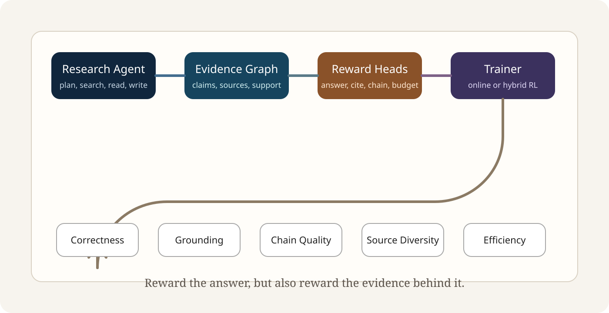

North star
Correct, grounded, traceable
Strong answers are not enough. The next generation of research agents must make their evidence legible.
Open-source research scaffold
EvidenceWeaver turns agentic RL into an inspectable evidence loop: search, read, structure claims, trace support, score the answer, and keep the artifact readable enough for humans to audit.
North star
Strong answers are not enough. The next generation of research agents must make their evidence legible.
Three research-style tasks that keep the core loop small and inspectable.
Twelve public-source-inspired tasks with provenance sidecars and failure summaries.
CI, Pages, policies, issue templates, changelog, and citation metadata are already live.
Broaden harder task families before plugging in online or hybrid RL.
python3 -m venv .venv
. .venv/bin/activate
pip install -e .
PYTHONPATH=src python3 -m unittest discover -s tests -v
PYTHONPATH=src python3 -m evidenceweaver.agent.baseline \
benchmarks/snapshot_v0/tasks/agent_training_stack_task.jsonThree snapshot tasks plus twelve real-case tasks.
Enough variation to surface failure clusters instead of cosmetic wins.
Typed run artifacts, scored runs, reward bundles, and graph summaries.
Project site, social card, community policy docs, and GitHub Pages deployment.
Why this repo exists
Many long-horizon agents are optimized for task success while under-optimizing for evidence quality, citation faithfulness, and multi-hop reasoning structure.
Separate answer quality, citation coverage, chain completeness, diversity, and efficiency so behavior changes are inspectable instead of hidden behind one scalar.
A research agent should maintain an evolving graph of claims, sources, duplicates, support edges, and unresolved gaps instead of collapsing everything into prompt text.
Diagnostics, failure cases, and weakest-task summaries belong in the public repo, not buried after the top-line score already sold the story.
Executable scaffold
EvidenceWeaver is intentionally small: a baseline agent, an evidence graph, an offline evaluator, a reward composition path, and benchmark suites that can be audited without private infrastructure.

The repo favors inspectable interfaces and replayable artifacts over impressive but opaque abstractions.
Plans, searches, reads, writes, and emits a typed `run-artifact.v0` JSON payload.
Tracks source nodes, claim nodes, support links, duplicates, and open questions.
Scores answer quality and citation quality separately to keep the benchmark honest.
Composes inspectable reward terms from the evaluation report instead of hiding them.
Turns a run into a lightweight summary that is easy to inspect in isolation.
Runs candidate baseline sweeps and reports weakest tasks, missed claims, and source gaps.
Benchmark shape
The repo now moves beyond synthetic-only examples: snapshot tasks prove the loop, and the twelve-task real-case suite creates real pressure on diagnostics, support quality, and trajectory credit assignment.
Snapshot v0
Real Cases v1
Current weak clusters are trajectory-credit assignment and diagnostics synthesis, which is a better failure signal than a near-saturated easy suite.
Quickstart
The goal is to go from cold repo visit to concrete artifact quickly: install, test, run the baseline, and score the output. No hidden service dependency is required.
python3 -m venv .venv
. .venv/bin/activate
pip install -e .PYTHONPATH=src python3 -m unittest discover -s tests -vPYTHONPATH=src python3 -m evidenceweaver.agent.baseline \
benchmarks/snapshot_v0/tasks/agent_training_stack_task.json \
--output /tmp/evidenceweaver_run.jsonPYTHONPATH=src python3 -m evidenceweaver.eval.offline \
benchmarks/snapshot_v0/tasks/agent_training_stack_task.json \
/tmp/evidenceweaver_run.json \
--emit-scored-run /tmp/evidenceweaver_scored_run.jsonRelease surface
Open-source trust comes from consistency: public docs, policies, reproducible commands, social preview polish, and metadata that help researchers and contributors land cleanly.
Issue templates, contributing guide, code of conduct, and security policy lower the first-contact friction.
Read contributing guide`CITATION.cff`, the paper draft, and roadmap docs make the project easier to cite, assess, and extend.
Open citation fileThe landing page is dependency-free, shareable on GitHub Pages, and backed by a social card for previews.
View Pages workflowRelease metadata, homepage links, and core policy files are now covered by lightweight tests.
Open release-surface testsWhere to go next
EvidenceWeaver is designed to earn trust slowly. High-signal contributions improve reproducibility, failure visibility, benchmark design, reward clarity, or the eventual RL integration path.
Propose a task family, frozen-source recipe, or evaluation setup that reveals a real gap.
Suggest a reward term, anti-hacking check, or scoring rule with explicit failure analysis.
Document a trajectory or policy behavior that broke in a way the current metrics should explain better.
Clarify the public story, harden reproducibility, or make benchmark assumptions easier to inspect.
Next public milestone